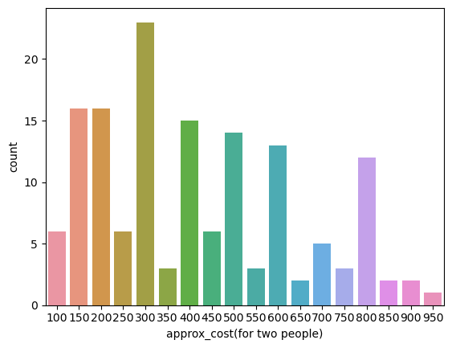
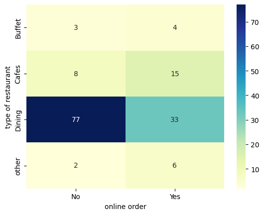
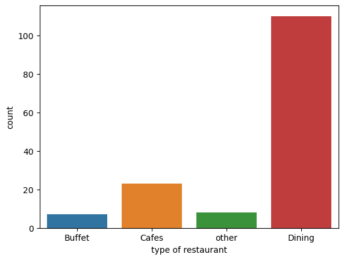
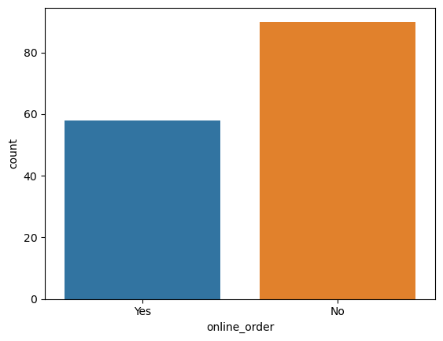
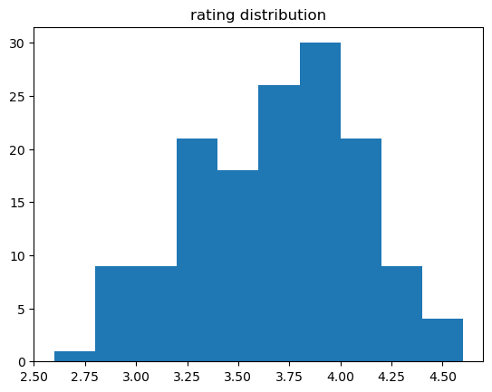
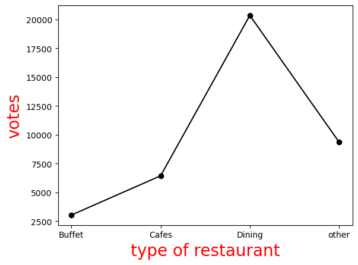

Core Pipeline Dependencies
The computational environment is anchored by four key data science modules for data handling, analysis, and visualization.
System Architecture Overview
A conceptual pipeline for the EDA workflow, from raw data to visual insights.
Processed Data Schema
Structural description of the engineered metrics vector tracking restaurant profiles.
| Feature | Category | Description |
|---|---|---|
name | Identifier | Unique Business Entity Identifier |
online_order | Binary Categorical | Evaluates digital consumer access alternatives (Yes/No) |
book_table | Binary Categorical | Tracks physical table reservation infrastructure (Yes/No) |
rate | Continuous | Normalized user satisfaction score (extracted from fraction string) |
votes | Quantitative | Accumulated quantitative feedback density |
approx_cost(for two people) | Quantitative | Economic benchmark pricing variable for consumer profile clustering |
listed_in(type) | Categorical | Structural classification of the establishment's business model |
Exploratory Data Analysis Sandbox
The algorithmic data cleaning, aggregation, and macro-profiling logic utilized during the EDA pipeline phase.
import pandas as pd import numpy as np import matplotlib.pyplot as plt import seaborn as sns # 1. Load and Profile the Structural Dimensions dataframe = pd.read_csv("Zomato data .csv") print(dataframe.head()) dataframe.info() # 2. Vectorized Fraction Parsing Logic for Customer Ratings def handlerate(value): value = str(value).split('/') value = float(value[0]) return value dataframe['rate'] = dataframe['rate'].apply(handlerate) # 3. Categorical Distribution Counts sns.countplot(x=dataframe['listed_in(type)']) plt.xlabel('type of restaurant') plt.show() # 4. Aggregation of Votes by Restaurant Type grouped_data = dataframe.groupby('listed_in(type)')['votes'].sum() result = pd.DataFrame({'votes': grouped_data}) plt.plot(result, c='black', marker='o') plt.show() # 5. Peak Feedback Isolation max_votes = dataframe['votes'].max() restaurant_with_max_votes = dataframe.loc[dataframe['votes'] == max_votes, 'name'] print(f'Restaurant with most votes: {restaurant_with_max_votes.values[0]} ({max_votes} votes)') # 6. Pricing Distribution couple_data = dataframe['approx_cost(for two people)'] sns.countplot(x=couple_data) plt.show() # 7. Multi-Axis Boxplot Analysis plt.figure(figsize=(6,6)) sns.boxplot(x='online_order', y='rate', data=dataframe) plt.show() # 8. Cross-Tabulation Pivot Matrix for Behavioral Mapping pivot_table = dataframe.pivot_table(index='listed_in(type)', columns='online_order', aggfunc='size', fill_value=0) sns.heatmap(pivot_table, annot=True, cmap='YlGnBu', fmt='d') plt.show()
Distribution & Matrix Heatmaps
Exploratory graphics tracking consumer engagement across distinct dining channels. Click any image to enlarge.






Key Analytical Findings
Primary insights extracted from the exploratory data analysis.
Diagnostic Breakdown: Traditional dine‑in restaurants rely heavily on offline orders, while modern cafes drive traffic through online order channels. The pivot heatmap clearly illustrates this behavioral split between restaurant type and ordering preference.
Analytical Synthesis
Key market discoveries pulled from the completed Exploratory Data Analysis workflow.
Core Observations: Our analysis reveals that Empire Restaurant generated the highest user interaction footprint, logging a peak of 4,884 total votes within this dataset. When checking cross-categorical dependencies via pivot matrices, clear structural dining habits emerge: traditional sit-down dining establishments focus heavily on direct offline orders, while modern cafes generate most of their traffic via digital online order pipelines.
Conclusion Summary: Customers explicitly prefer in-person visits when dealing with premium multi-course dining environments, but show a strong preference for digital order setups when engaging with smaller cafe locations.